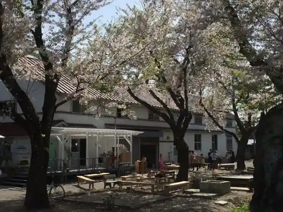
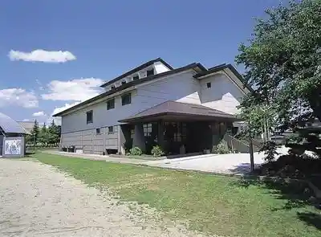
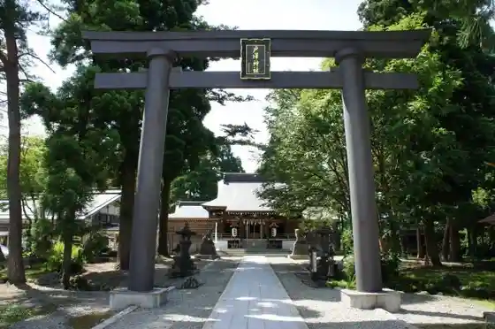

Shinjo Eki
Shinjo, Yamagata · Official / source link
Yumeria
Shinjo, Yamagata · 0233-28-8888 · Official / source link
Roadside Station Shinjo Ekorojii Garden (Hara Kaiko no Mori)
Shinjo, Yamagata · 0233-22-2111 · Official / source link

Shinjo Furusato Rekishi Center
Shinjo, Yamagata · 0233-22-2188 · Official / source link

Shinjo Joshi Saijo Park
Shinjo, Yamagata · 0233-22-2111 · Official / source link

Tsuchi Nai Gorge
Shinjo, Yamagata · 0233-22-2111 · Official / source link
Kyukokutetsu Shinjo Eki Kikan Ko
Shinjo, Yamagata · 0233-22-5580 · Official / source link
Ichi Falls
Shinjo, Yamagata · 0233-22-2111 · Official / source link
Tozawa Shrine
Shinjo, Yamagata · 0233-22-1451 · Official / source link
Saijo Chuo Park (Kamuten Park)
Shinjo, Yamagata · 0233-22-2111 · Official / source link
Kamuro Yama
Shinjo, Yamagata · 0233-22-2111 · Official / source link
Isurugi Shrine
Shinjo, Yamagata · 0233-22-2111 · Official / source link
Yuki no Sato Johokan
Shinjo, Yamagata · 0233-22-7891 · Official / source link
Higashiyama Park Ajisai no Mori
Shinjo, Yamagata · 0233-22-2111 · Official / source link
Shinjo Hanshu Tozawa Ie Hakasho / Zuiun In (Zuiun'in)
Shinjo, Yamagata · 0233-22-1051 · Official / source link
Torigoe Hachiman Shrine
Shinjo, Yamagata · 0233-22-2111 · Official / source link
Basho Josen no Chi
Shinjo, Yamagata · 0233-22-2111 · Official / source link
Omori Yama no Okuchojizakura
Shinjo, Yamagata · 0233-22-2111 · Official / source link
Kanazawa Park (Kotsu Park)
Shinjo, Yamagata · 0233-22-2111 · Official / source link
In Akedera Tako
Shinjo, Yamagata · 0233-22-0666 · Official / source link
Himuro no Kuhi to Yanagi no Shimizu
Shinjo, Yamagata · 0233-22-2111 · Official / source link
San Falls
Shinjo, Yamagata · 0233-22-2111 · Official / source link
Sanchoku Mayu no Sato
Shinjo, Yamagata · 0233-23-5007 · Official / source link
Yukiguni Wanda Land (Shinjo)
Shinjo, Yamagata · 0233-22-2340 · Official / source link
Jin Mine City Tami Forest
Shinjo, Yamagata · 0233-22-2111 · Official / source link
Kaminari Taki
Shinjo, Yamagata · 0233-22-2111 · Official / source link
Moku Kurayama
Shinjo, Yamagata · 0233-22-2111 · Official / source link
Hachi Ko Tate to Saijo Kawa
Shinjo, Yamagata · 0233-22-2111 · Official / source link
Shinjo Hanshu Tozawa Ie Hakasho / Katsuradake Tera (Keigakuji)
Shinjo, Yamagata · 0233-22-2111 · Official / source link
Kyu Yahagi Ie House
Shinjo, Yamagata · 0233-22-2111 · Official / source link
Tenma Shrine (Saijo Koennai)
Shinjo, Yamagata · 0233-22-2111 · Official / source link
Domari Falls
Shinjo, Yamagata · 0233-22-2111 · Official / source link
Kyoku Taki
Shinjo, Yamagata · 0233-22-2111 · Official / source link
Ippai Mori
Shinjo, Yamagata · 0233-22-2111 · Official / source link
Yako Shrine
Shinjo, Yamagata · 0233-22-2111 · Official / source link
Kakuzawa Kaido no Maru Hotoke
Shinjo, Yamagata · 0233-22-2111 · Official / source link
Hangan Shrine
Shinjo, Yamagata · 0233-22-2111 · Official / source link
Shinjo Tami Ski Area
Shinjo, Yamagata · Official / source link